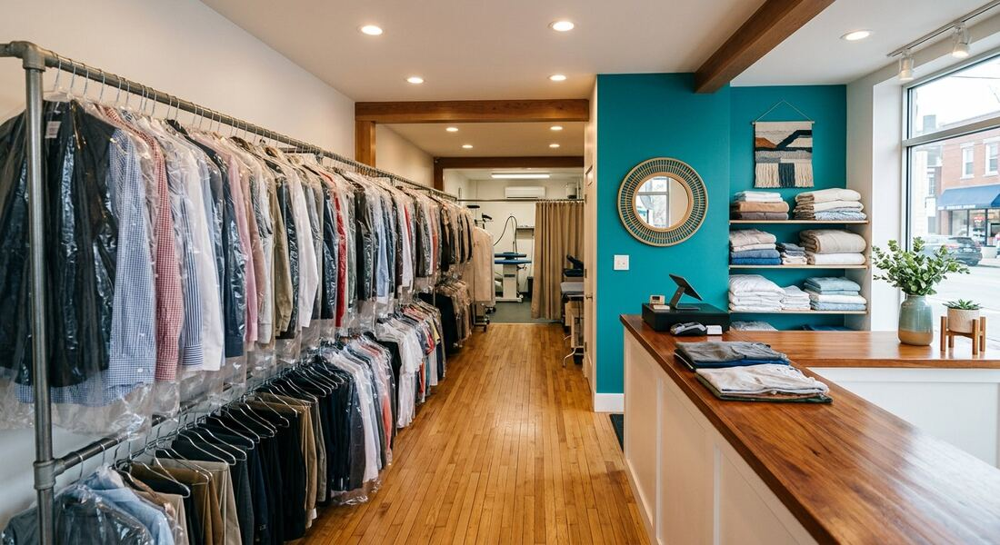
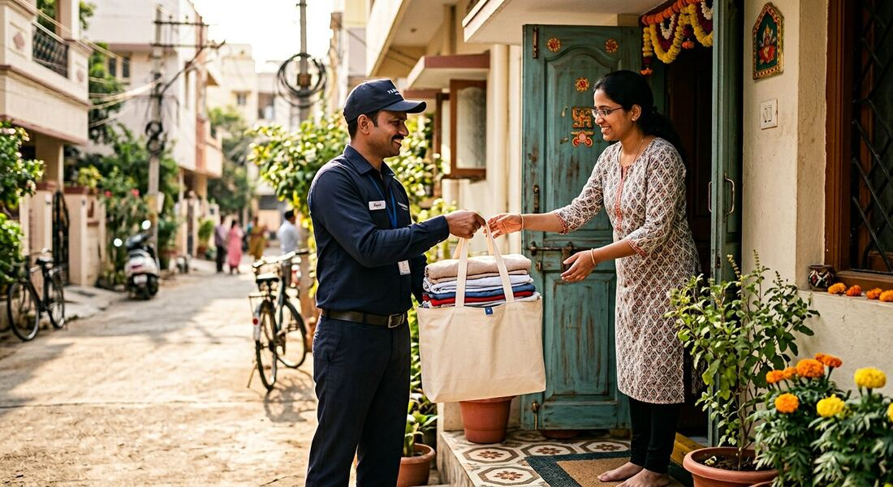
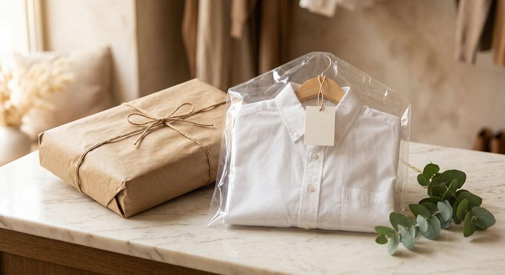
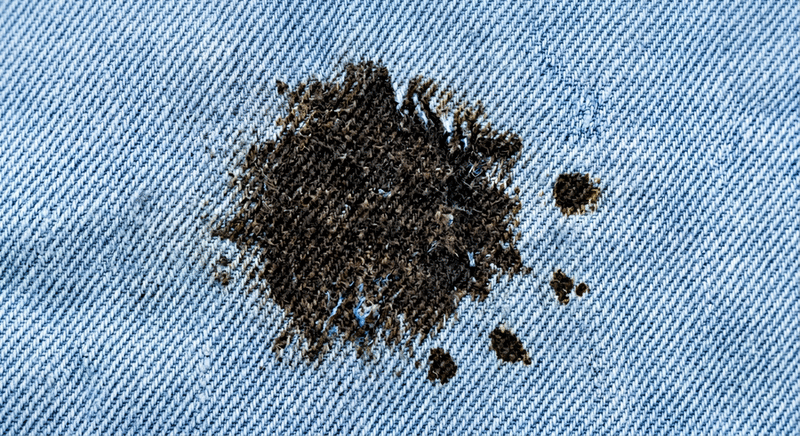
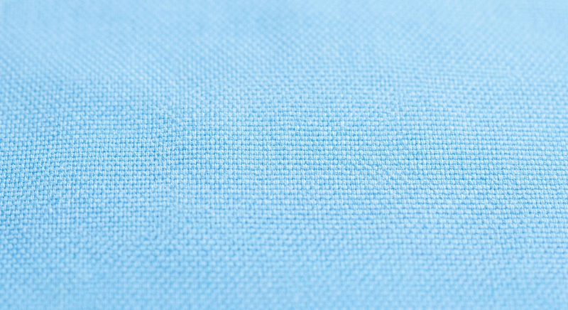
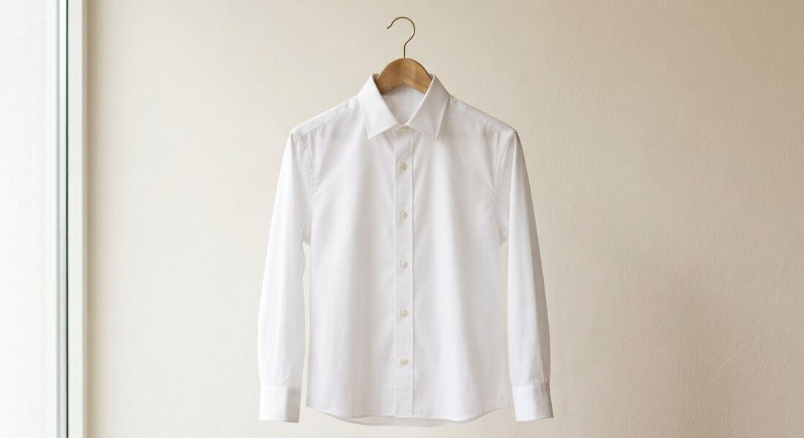
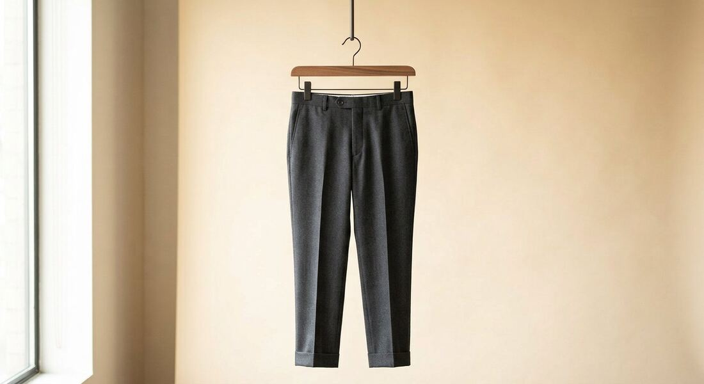

Every file here is auto-matched to a named slot by src/lib/images.ts (case, spaces, _,
- and & are ignored), then inlined into the single-file build. To swap in a real photo,
replace the file keeping the same name (or use any of the aliases noted per slot) and run
npm run optimize-images && npm run build. The two before/after files are PNG on purpose and must
share the same framing.








